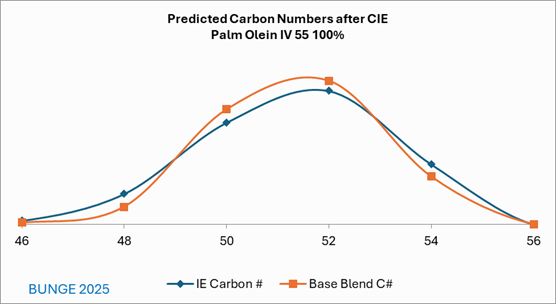
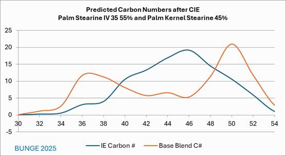

Interesterification Overview in Making Indulgent Fats and Oils for the Food Industry
Brian Armstrong, Gil Wang - Bunge NA R&D
Visual: A compelling image of delicious, indulgent foods like croissants, chocolate, or creamy margarine.
Introduction to Interesterification (IE)
What is Interesterification (IE)?
- A process that rearranges fatty acids on triglycerides (TAGs)
- Creates desired textures and flavors in fats and oils
Why is IE Significant Today?
- Past Method: Partial hydrogenation (created functional TAGs like PEO, but with harmful trans fats)
- Regulatory Shift: Trans fat bans (FDA 2018, EU 2021, WHO 2023)
- Blending Issues: Physical blending (e.g., palm with soy) led to oily/gritty textures due to mismatched TAGs (SSS/PPP vs. OOO)
- IE's Solution: Adjusts TAG compositions for:
- Zero trans fats
- Indulgent mouthfeel
- Easier processing
History of IE: Early Development (Pre-1950s)
Early Exploration
- Began in the early 20th century.
1940s Breakthrough
- Researchers at Procter & Gamble patented chemical IE.
- Purpose: Modify lard's waxy beta-form crystals into plastic β' crystals.
- Result: Smoother, more workable lard for shortenings (cakes, pastries).
- Revolutionized the baking industry.
History of IE: Expansion & The Hydrogenation Era (1950s-1970s)
1950s-1960s: IE Extended to Vegetable Oils
- For margarine production.
- Blended vegetable oils (soybean, cottonseed) with fully hydrogenated oils.
- Created spreadable margarine with stable β' crystals and ideal melting points.
- Avoided greasiness of blends and waxiness of hydrogenated fats.
Niche Process
- IE remained secondary to partial hydrogenation.
- Partial hydrogenation was cheaper and produced trans-fat-containing TAGs (e.g., PEO) with excellent functionality.
History of IE: Trans Fat Concerns & Modern Prominence (1980s-Present)
1980s: Health Concerns About Trans Fats Emerge
- Industry revisits IE as a trans-fat-free alternative.
1990s: Refinement of Chemical IE; Enzymatic IE Gains Traction
- Enzymatic IE (using lipases) allowed precise control over TAG structures (e.g., PPO, POP).
- Enabled tailored fats (e.g., cocoa butter equivalents for chocolate).
Post-2000: Global Trans Fat Bans Solidify IE's Role
- IE becomes a cornerstone of the fats and oils industry.
- Widely used for cookies, pastries, margarine, coatings.
- Achieves desired Solid Fat Content (SFC) profiles and smooth β' textures.
Understanding Triglyceride (TAG) Profiles of Typical Oils
Key Concept
- Not just saturated fat content, but fatty acid arrangement on glycerol backbone is vital.
- IE can make oils less waxy, more spreadable, and creamier with the same saturation.
Natural Oil Limitations
- Fixed TAG profiles limit direct use without modification.
Overview of Oil Categories
| Category | Oil/Fat | Major TAGs (%) | Carbon Number | Format at Ambient Temperature | Crystal Habit |
|---|---|---|---|---|---|
| Liquid Oils | Soy/Canola/Sunflower/HO varieties | LLL, OLO, OLL, OOO | C54 | Liquid | Beta |
| Tropical Non-Lauric Oils | Palm and its fractions | PPO, POP, POO, PPP | C48, C50, C52 | Solid to semi-solid | Beta-prime |
| Tropical Lauric Oils | Palm Kernel, Coconut | LLL, LaLaM, LaMO, LaMM | C36, C38 | Melts quickly around 27-35°C | Beta-prime |
| Confectionery Fats | Cocoa Butter, Shea, Illipe | POS, POP, SOS | C50, C52 | Hard at ambient, melts easily | Beta |
| Animal Fats | Tallow, Lard, Butter | PPO, POO, POS, SOO, POP | C50, C52 | Semi-solid | Beta |
Specific TAG Melting Points & Crystal Habits
TAG Properties
- Influenced by fatty acid composition and positional arrangement.
Impact on Functionality
- High Melting (e.g., SSS): Waxy, forms β crystals (graininess).
- Intermediate Melting (e.g., PPO, SSO): 30-40°C, often forms β' crystals (smooth texture, plasticity).
- Low Melting (e.g., OOO, LLL): Fluid, leads to oil leakage.
- Lauric-based: Sharp melting, β' crystals (suitable for coatings, but soften easily).
Practical Example (Oleic/Stearic Blend)
- An oil with 25% SSS (melting point 60-70°C) is waxy.
- IE reduces SSS to 5% and converts stearic acid to SSO, making the oil much softer.
| TAG | Carbon Number | Melting Point (°C/°F) (Estimate between beta and beta prime) |
Crystal Habit |
|---|---|---|---|
| SSS | C54 | 60-70 / 140-158 | Beta |
| SOO | C54 | 34-36 / 93-97 | Beta |
| SSO | C54 | 35-40 / 95-104 | Beta-prime |
| OOO | C54 | -5 to 0 / 23-32 | Beta |
Challenges of Blending Oils (Without IE)
Blending Goal
- Balance solid fat content (SFC) and texture.
Common Issues
- Mouthfeel: Multiple melting peaks, oily/waxy due to incompatible TAGs (e.g., PPP/SSS vs. OOO).
- Inconsistent SFC: Eutectic effect (TAGs crystallize independently, lowering melting point).
- Oil Leakage: Liquid TAGs separate from solid ones (common in cookies/pastries).
IE as the Solution
- Creates hybrid TAGs (e.g., LaMP, PPO).
- Ensures uniform melting and β' crystallization.
- Delivers smooth mouthfeel, stable SFC, and no oil leakage.
Application: Cookies and Biscuits
Fat Functionality
- Processability: Creamy, spreadable doughs, stable during mixing.
- Structure: β' crystal structures, sufficient SFC (prevents graininess).
Sensory & Indulgence
- Smooth, non-greasy mouthfeel.
- Sharp melt at 35–40°C (releases rich flavors).
IE's Advantage
- Blending alone (mismatched SSS, OOO) leads to oil leakage and inconsistent SFC.
- IE produces uniform TAGs, stabilizing SFC and ensuring a smooth, firm texture.
Application: Margarine Hardstock
Fat Functionality
- Processability: Forms stable emulsions, blends easily.
- Structure: β' crystals are crucial for spreadability.
- Texture: Sharp melt at 37°C ensures creamy, smooth texture.
Sensory & Indulgence
- Smoothness and rich, butter-like mouthfeel.
IE's Advantage
- Blending palm kernel oil with palm/soy often leads to oil leakage and soft textures.
- IE generates specific TAGs (LaPO, LPP) that stabilize SFC and maintain spreadability.
Case Study: Palm Olein Modification
Natural Palm Olein
- ~45% saturated fatty acids, very liquid at ambient temperature.
- High in PPO (C50), OOO/OLO (C54), POO (C52); low PPP (C48).
Impact of IE
- Increases PPP (C48) content.
- Decreases C50 and C52 contents.
- Result: Improved firmness, creaminess, and plasticity for baking applications.

Case Study: Compound Coatings IE
Coating Requirements
- Rapid crystallization for high-throughput processing.
- Hard and glossy at room temperature.
Sensory & Indulgence
- Crisp texture, smooth melt.
- Sharp 35°C melt delivers rich mouthfeel.
Blending Issues
- Palm kernel stearin with palm stearin often results in brittle or soft coatings due to TAG incompatibility.
Impact of IE
- Reduces LLL (C36), PPP (C48), PPO (C50).
- Results in a TAG profile that provides superior eating quality and texture.

Key Takeaways
- Interesterification (IE) is a pivotal process in the modern food industry.
- It enables the creation of indulgent, high-performing fats and oils.
- IE effectively addresses challenges posed by trans fat bans and limitations of traditional blending.
- By precisely rearranging TAGs, IE optimizes fat functionality, texture, and sensory attributes across diverse applications.
Abbreviations of TAGs
- TAGs: Triglycerides
- PEO: Palmitic-Elaidic-Oleic
- PPP: Palmitic-Palmitic-Palmitic
- OOO: Oleic-Oleic-Oleic
- LLL: Linoleic-Linoleic-Linoleic
- PPO: Palmitic-Palmitic-Oleic
- POP: Palmitic-Oleic-Palmitic
- POS: Palmitic-Oleic-Stearic
- SOS: Stearic-Oleic-Stearic
- LaLaM: Lauric-Lauric-Myristic
- LaMO: Lauric-Myristic-Oleic
- LaMM: Lauric-Myristic-Myristic
- POO: Palmitic-Oleic-Oleic
- SOO: Stearic-Oleic-Oleic
- SSO: Stearic-Stearic-Oleic
- PLO: Palmitic-Linoleic-Oleic
- LaPO: Lauric-Palmitic-Oleic
- LaPP: Lauric-Palmitic-Palmitic
- LaSO: Lauric-Stearic-Oleic
References / Further Reading
- FDA (2018). Final Determination Regarding Partially Hydrogenated Oils. Federal Register.
- EU (2021). Regulation (EU) 2019/649 on Trans Fats. Official Journal of the European Union.
- WHO (2023). REPLACE: A Roadmap to Eliminate Trans Fats. World Health Organization.
- Timms, R. E. (1984). Phase behaviour of fats and their mixtures. Progress in Lipid Research, 23(1), 1-38.
- Berry, E. (2009). Triacylglycerol structure and interesterification of palmitic and stearic acid-rich fats: an overview and implications for cardiovascular disease. Proceedings of the Nutrition Society, 68(4), 365-372.
- Gurr, M. I., et al. (2002). The digestion of dietary triacylglycerols. Progress in Lipid Research, 41(1), 1-36.
- Rajah, K. K. (2014). Fats in Food Technology (2nd ed.). Wiley-Blackwell.
- Eckey, E. W. (1948). Directed Interesterification of Lard. Journal of the American Oil Chemists' Society, 25(6), 209-211.